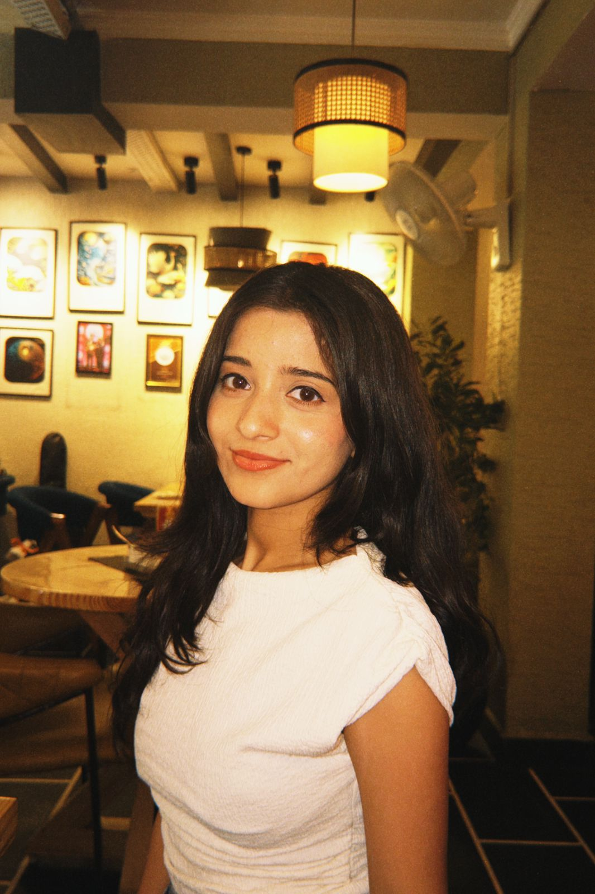

and

About Me
Hello! I'm Yashmita Bhushan, a B.Tech student in Computer Science Engineering (AI) at Indira Gandhi Delhi Technical University for Women with a CGPA of 9.13/10. I recently interned at DRDO-CFEES, developing an Employee Management System using React.js, Python, and SQL. Previously, I completed an AI-Powered Full Stack Development internship at IGDTUW, building applications and a Parkinson's Disease Detection model that achieved 87.18% accuracy using SVM. I am passionate about Machine Learning and Full Stack Development, having solved 400+ LeetCode problems and built projects like a GIS-based Flood Mapping Dashboard and the Trust Pulse Risk Engine.
Work Experience
(June 2026 – July 2026)
- Developed an Employee Management System with React.js, Python, and SQL, featuring 10+ modules.
- Implemented authentication, backend APIs, and SQL database integration using Python, enabling secure role-based access.
(June 2025 – July 2025)
- Developed React-based web applications with reusable components and REST API integration.
- Built a machine learning model for Parkinson's disease detection using 190+ samples, evaluating LR, RF, XGBoost, and SVM to achieve 87.18% accuracy.
My Skills
Technical Skills
- Programming Languages: C++, Python, Java, R, SQL
- Problem Solving: LeetCode (400+ problems solved)
- CS Fundamentals: Data Structures & Algorithms, OOP, DBMS, OS, Computer Networks
- Web Development: HTML, CSS, JavaScript, React.js, Next.js, Tailwind CSS
- Libraries & Tools: Pandas, NumPy, TensorFlow, Matplotlib, Git, VS Code, Jupyter Notebook, Google Colab
- AI/ML: Machine Learning, Deep Learning (CNN), Data Preprocessing, Model Evaluation
Soft Skills
- Effective Communication & Active Listening
- Leadership & Time Management
- Problem Solving & Creativity
Projects
Mapping Water-Logging Hotspots of Delhi
Technologies: React.js, Leaflet.js, Python, Scikit-learn
- Built a GIS-based flood-risk analysis system by integrating data from public sources to map 50+ water-logging hotspots.
- Trained a Random Forest model to predict flood-risk levels using integrated geospatial and environmental data.
- Integrated real-time rainfall updates, priority scores, and rule-based government recommendations.
Trust Pulse-Merchant & Product Risk Engine
Technologies: React.js, Flask, Python, Scikit-learn, SQLite
- Built a risk engine scoring 60+ merchants and 300+ products using ML classification and anomaly detection.
- Applied LR, RF, SVM, XGBoost, and Isolation Forest for fraud detection and behavioral anomaly analysis.
- Developed a React + Flask dashboard with role-based authentication, live risk simulation, alerts, and a geospatial risk map.
Plant Disease Detection using CNN
Technologies: Python, TensorFlow, Gradio
- Built and trained a CNN using TensorFlow on the Plant Village dataset (54k+ images, 38 classes).
- Achieved 87.12% validation accuracy and deployed the model via a Gradio web interface for real-time predictions.
AI Fitness & Nutrition Planner
Technologies: HTML, CSS, JavaScript, REST API, Chart.js
- Built an AI-driven web app with 50+ personalized meal plans and 100+ workouts tailored to user goals.
- Created a food database of 1,000+ items via REST API integration for accurate tracking of calories and macros.
- Created interactive progress dashboards and charts to track 30+ days of weight, BMI, and calories.
ELLA-CHATBOT
Technologies: HTML, CSS, JavaScript, OpenAI API
- Built "Ella" an AI chatbot with real-time responses powered by the OpenAI API and a smooth, responsive chat interface.
- Implemented features like theme toggle (dark/light mode), chat delete, and stop button, enhancing user control.
- Focused on clean UI/UX, responsive design, and error handling to ensure a seamless and accessible user experience.
Cam-Link – Phone-to-Laptop Camera Streaming
Technologies: HTML5, CSS3, JavaScript, WebRTC
- Developed a P2P camera streaming web app using WebRTC for real-time video transfer between devices without a backend server.
- Integrated browser media APIs (getUserMedia) for secure camera access and implemented manual SDP exchange using STUN servers.
- Designed a responsive UI for seamless usage across mobile and desktop devices.
Personal Portfolio Website
Technologies: HTML, CSS, JavaScript
- Created this portfolio to showcase projects, skills, and work experience.
- Implemented responsive design and smooth navigation for better user experience.
Amazon Clone
Technologies: HTML, CSS
- Developed a non-responsive clone of Amazon’s homepage.
- Built navigation bars, product grids, and promotional sections using Flexbox and Grid.
Real-Time Currency Converter
Technologies: HTML, CSS, JavaScript, Exchange Rate API
- Built a responsive currency converter with real-time exchange rate integration.
- Implemented dynamic UI updates and smooth user interaction.
Tic Tac Toe Web Game
Technologies: HTML, CSS, JavaScript
- Designed a responsive 3x3 game board using Flexbox.
- Added turn logic, win detection, draw handling, and reset functionality.
Achievements & Extracurriculars
- SIH Internal Round Finalist: Proposed a platform to showcase Sikkim's monasteries for tourism and cultural preservation (Top 200+ teams).
- Research Paper Accepted: "Voice-Based Detection of Parkinson's Disease Using Machine Learning Techniques" at ICOIICS 2025.
- Flipkart GRID 8.0: Selected as a Semi-Finalist.
- TVS Credit E.P.I.C 8.0: Selected among the Top 400 candidates from 70,000+ participants.
- Core Member: Finivesta Neutron & CodeBenders – Designed impactful visual content and merchandise to strengthen brand identity.
Contact Me
If you'd like to get in touch, feel free to reach out through any of the platforms below:
Email: yashmitabhushan@gmail.com
Phone: +91-8810369201
LinkedIn: linkedin.com/in/yashmita-bhushan
GitHub: github.com/yashmita05